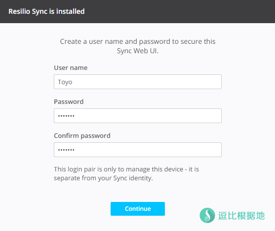
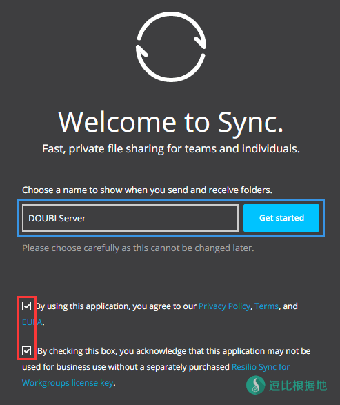
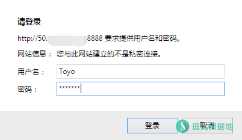
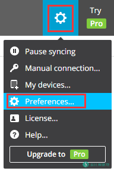
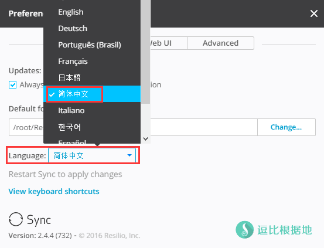
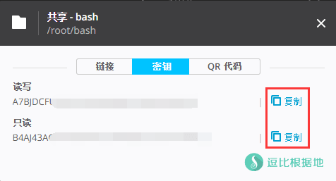
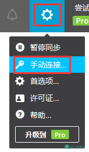
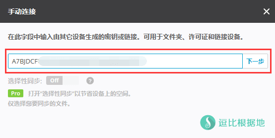
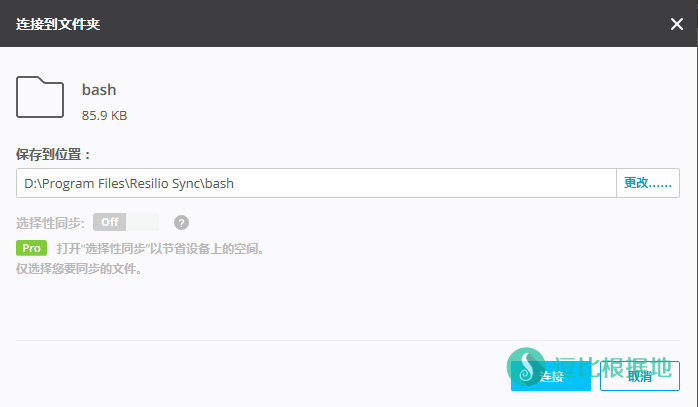

一星期前，有个逗比想要让我写个 Resilio Sync（原名 BitTorrent Sync）的Linux安装教程，我看了看并不难，只是这段时间一直忙其他的就拖到了现在，我也是醉了。
Sync 简单介绍
Resilio Sync 足够简单并且支持中文语言（因为支持中文那么就简单多了），你可以通过链接、秘钥或二维码的方式共享你电脑/手机等设备里的任意文件夹，通过共享方式获取的设备也可以把共享文件存放在任意位置。
因为不需要经过云端服务器，Resilio Sync 的传输速度是它最大的优势。尤其是在局域网下的传输速度远超普通网盘，即使在非局域网环境下，文件的传输速度也可达到最慢端速度的上限。在传输过程中，文件都会进行 AES 加密，也不用担心隐私泄露的问题。
当然最重要的是，拿这个开车的人很多 
客户端下载地址：https://www.resilio.com/platforms/desktop/
下载 Sync
假设当前在ROOT目录，新建并进入 sync 文件夹（/root/sync）。
mkdir sync && cd sync
然后用下面命令 判断一下你的VPS是什么位数，如果返回 x86_64 那就是64位，如果返回 i386或386 那就是32位，如果返回 i686或686 那么不支持，请更换系统。
uname -m # 64位选第一行，32位选第二行。 wget --no-check-certificate -O sync.tar.gz https://download-cdn.resilio.com/stable/linux-x64/resilio-sync_x64.tar.gz wget --no-check-certificate -O sync.tar.gz https://download-cdn.resilio.com/stable/linux-i386/resilio-sync_i386.tar.gz # 解压后赋予执行权限。 tar -xzf sync.tar.gz && rm -rf sync.tar.gz chmod +x rslsync
上面命令执行完并没有报错，那么我们还需要设置一下VPS的时区和时间（Sync要求两个同步端直接的时间不能相差10分钟）：
cp /usr/share/zoneinfo/Asia/Shanghai /etc/localtime
修改时区为 上海/北京 时区，修改后，再输入 date 查看一下时间适合和你电脑PC本地的时间差不多，如果还是差很多的话，那么需要手动设置 系统时间了。
假设你电脑（最好提前校准为北京时间）时间为 2017年3月28日 19时05分30秒 ，那么这样写：
date -s "2017-03-28 19:05:30"
执行后，我们再用 date 查看一下系统时间是否正确，如果没问题了，那么就可以运行 Sync了，运行后没有报错就不用管了，会自动挂在后台的（关闭SSH也没事）
./rslsync --webui.listen 0.0.0.0:8888
Web UI 配置
初始化 配置
浏览器打开 http://ip:8888 就会看到 Sync Web UI 界面。
首先会让设置 用户名和密码，设置后点 Continue 按钮继续。
然后会让设置 该设备的 设备名，并勾选下面的两个选择框，然后点击 Get started 按钮继续。



然后就会提示你输入一开始设置的用户名和密码了，输入并登陆后，我们就会看到Sync Web UI的界面了，和PC客户端的界面一样。
修改语言
然后我们点击右上角的 齿轮（设置），然后点击选项 Preferences... 就会出现一个设置界面，如下下图所示，我们修改 Language 为简体中文，然后 F5 刷新页面即可生效（不过有个问题，重启Sync后，就会自动变成默认的语言）。


共享文件夹
注意：这里是把服务器上面的文件夹共享出去，其他设备可以同步这个服务器上面的这个文件夹。
如果你需要把 PC本地的文件夹共享到 服务器上面，那么步骤一样，不过是两个客户端操作反过来即可，也就是PC客户端共享文件夹，然后服务器上面的客户端(Sync Web UI)输入密匙来同步。
我们点击页面左上角的 添加文件夹 按钮，选择一个要共享同步的文件夹，然后就会提示你共享方式，你可以选择 链接/密匙/二维码。
然后其他设备的客户端 点击链接/输入密匙/扫描二维码 即可访问或修改这个文件夹了。
读写 指的是：其他设备链接后可以读取并修改文件夹内容。
只读 指的是：其他设备链接后只能读取文件夹内容。

客户端 配置
下载 客户端
https://www.resilio.com/platforms/desktop/
- Mac - OS X 10.8 Mountain Lion or later
- Windows 7 or later (32 bit) - Windows 7 or later (64 bit)
- iOS 8 or later
- Android 4.0 or later
初始化 配置
运行客户端后，首先会让你输入 设备名称，还有勾选下面的两个 选择框，然后点击 入门 按钮即可。


因为 Sync 默认是根据系统语言来选择客户端语言的，所以默认就是中文的。
注意：这里是在PC设备中同步其他设备上面的文件夹。
如果你需要把 PC本地的文件夹共享到 服务器上面，那么步骤一样，不过是两个客户端的操作反过来即可，也就是PC客户端共享文件夹，然后服务器上面的客户端(Sync Web UI)输入密匙来同步。
我们点击 客户端右上角的 齿轮（设置） 按钮，点击选项 手动连接... 就会出现下面这个窗口，然后输入 你要链接的共享文件夹的 密匙 并点击 下一步，然后就会让你选择一个 要同步文件到本地的哪个文件夹，选择后就会开始同步。


Sync 使用方法
启动 Sync
cd /root/sync ./rslsync --webui.listen 0.0.0.0:8888
停止 Sync
kill -9 $(ps -ef|grep "rslsync"|grep -v grep|awk '{print $2}')
其他说明
无法连接 Sync Web UI
可能是防火墙的问题，教程中默认监听的端口是 8888 ，开放端口即可。
iptables -I INPUT -m state --state NEW -m tcp -p tcp --dport 端口 -j ACCEPT iptables -I INPUT -m state --state NEW -m udp -p udp --dport 端口 -j ACCEPT # 删除防火墙规则，内容一样把 -I 换成 -D 就行了： iptables -D INPUT -m state --state NEW -m tcp -p tcp --dport 端口 -j ACCEPT iptables -D INPUT -m state --state NEW -m udp -p udp --dport 端口 -j ACCEPT
转载请超链接注明：逗比根据地 » Linux 搭建 Resilio Sync Web UI 同步客户端教程
责任声明：本站一切资源仅用作交流学习，请勿用作商业或违法行为！如造成任何后果，本站概不负责！


--no-check-certificate，这样就会忽略SSL证书报错。./rslsync --webui.listen 0.0.0.0:8888)后，就直接能访问 ip:8888 了。如果不能访问请查看是否启动，或者端口是否开放。就像你在VPS上面装一个可以下载BT的软件，这并不会怎么样，但是如果你用这个BT软件下载侵权文件的BT，那就违规了。